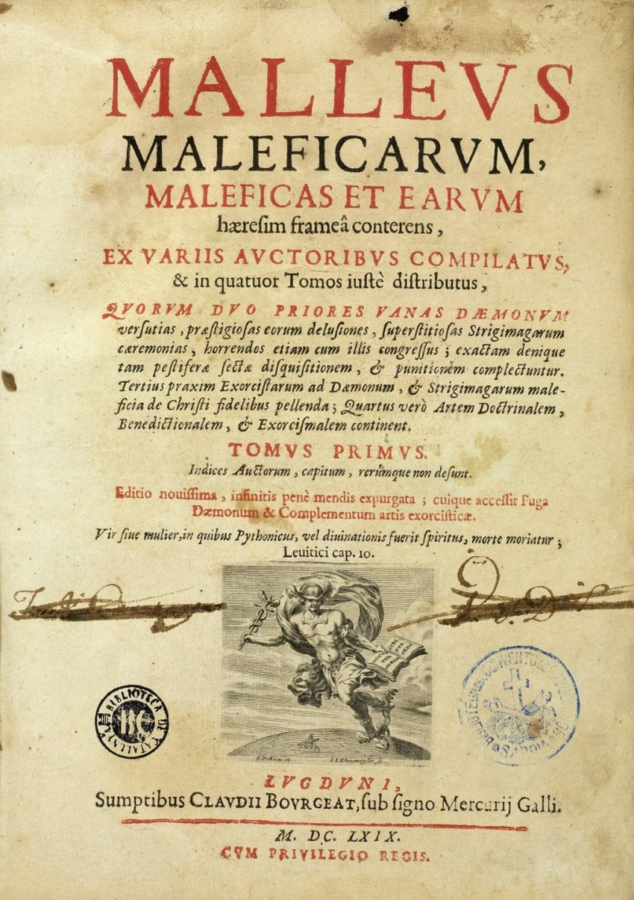

수많은 사람들을 화형대에 올리는데 일조한 마녀사냥 메뉴얼 말레우스 말레피카룸은, 하인리히 크라머와 야콥 슈프링거가 공동저자로 알려져 있음
근데 학계에서는 야콥 슈프링거가 실제로 유의미하게 참여했나?
혹은 아예 크라머가 명의를 도용한게 아닌가? 란 추측이 있음.
1. 애초에 두명의 급이 다르다
일단 명목상 둘은 모두 도미니코회란 명망높은 수도회의 일원임
둘다 종교재판관
근데 세부적으로 보면 많이 다름
크라머는 종교재판관, 시골 수도원장 한번, 교수 몇번
야곱은 쾰른 도미니코 수도원장(독일 최고 핵심지역), 독일관구 대리, 독일관구장, 쾰른대 신학박사 겸 신학부 학장
이해하기 쉽게 치환하면
크라머는 서울대+지법 판사+법대 교수 이정도면
야곱은 서울대+지법 판사+유명 로스쿨 학장+고법원장 대리+고법원장
이런거 달고있던 양반
애초에 같은 도미니코회(서울대) 출신이라고 같은 급이 아니었음
2. 크라머 이새끼 제정신 아닌거 너무 유명했음
1485년 인스브루크에서 마녀재판이 하나 있었음.
그때 헬레나란 여성 하나가 마녀재판으로 갔는데...
(대충 마녀의혹 받는중)
크라머 이 미친 새끼가 뭔가 절대 신학적이지 않은 내용을 질문함
하도 음란해서 언론이나 여러 매체에서 적을수 없다보니 제대로 퍼진게 적긴한데 대충 뭘 질문했냐면
"악마 성기 차갑다는거 진짜임?"
"남편이랑 야스할때 뭔 체위로 야스함?"
"그그 거기 근처 털 관리는 어떻게 해?"
뭐 대충 이딴걸 질문함. 이러면서 나체검사도 자꾸 함.
이 미친 크붕이는 결국 무려 주교가 얜 노망나고 음탕한 늙탱이라며
재판을 무효화하고 무려 교황의 대리인인 종교재판관을 추방함
이래서 이때 빡쳐있던 감정이 말레우스 말레피카룸에 가득 들어감
(이 일이 일어니고 1~2년 후에 쓴 책)
근데 이딴 변태랑 한국으로 치면 미래 고등법원장이 같이 작성했다?
3. 엥 걔 그거 쓴적 없는데요? + 왜 지 얘기만 가득?
당시 쾰른에서 야곱 슈프랭거랑 친하던 친구이자 동료인
세르바티우스 팡켈(Servatius Fanckel)이 있었는데
"그거 명의 써져있는데 야곱은 실제로는 그런 책이 저술되는지도, 아니 내용도 애초에 아무것도 몰랐다" 라고 증언함.
그리고 말레우스 말레피카룸에서 쓰는 서술 방식이
“나는 이런 사건을 조사했고”, “이런 마녀 사건을 경험했고”, “우리 재판관들이 이렇게 처리했다”
뭐 대충 이런거에다가 자기 생각이랑 그런거 가득 집어넣었는데
이상하게 크라머 관할지 내용만 주구장창 나오고
야곱 관할지 내용이 아예 없음.
그래서... 사실 이제 제목은 어그로 끌려고 음모론이라 한거지
사실상 학계에서는 그냥 대충 추천장 써준 사람 중 한명, 그리고 아예 존재자체를 몰랐는데 이름이 도용된 케이스 로 보고있음
중세에는 정보가 뒤지게 전달이 안되서 이렇게 대놓고 도용해도 모르는 경우가 태반이었거든


오르도 말레우스가 용서치 않을 것이다